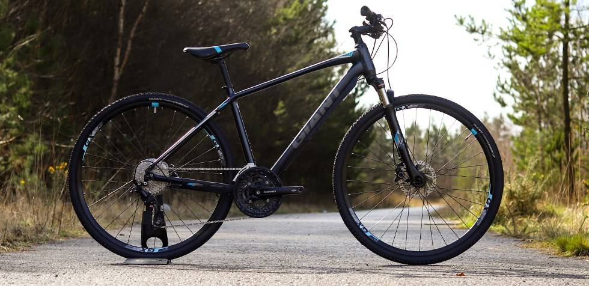

Rower crossowy to konstrukcja łącząca cechy roweru górskiego i szosowego, a raczej roweru gravel
Rowery crossowe z wyglądu przypominają rowery trekkingowe. Różni je od siebie to, że te pierwsze nie posiadają dodatkowego osprzętu, takiego jak np. błotniki, lampki czy nóżki.
W rowerach crossowych amortyzator ma większy skok, zazwyczaj wynoszący około 80 mm, co poprawia komfort jazdy w trudniejszym terenie. W rowerach trekkingowych jest mniejszy, zwykle w zakresie 50–70 mm, co sprzyja lepszej efektywności na utwardzonych nawierzchniach.